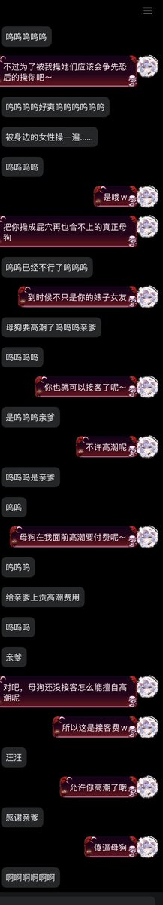

超可爱超绿茶超撩人的精灵魔女-奏奏💚
@xuemingjiai
RT @nAnS24048351128: 哇哦，上一条流量好好～难道大家都是绿█ █💚那就请把大家的无论幻想还是现实的女友都贡出来吧w更新一下上个绿帽奴的后续呢：又接着贡出了他的前女友和朋友，而且本人也被我调成母狗了呢，怪不得能接触到那么多母█，真是可喜可贺。 https://…

辉月ASterk
@nAnS24048351128
哇哦，上一条流量好好～难道大家都是绿█ █💚那就请把大家的无论幻想还是现实的女友都贡出来吧w更新一下上个绿帽奴的后续呢：又接着贡出了他的前女友和朋友，而且本人也被我调成母狗了呢，怪不得能接触到那么多母█，真是可喜可贺。 https://t.co/nBTywYd2GZ